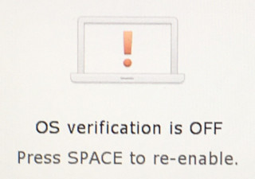
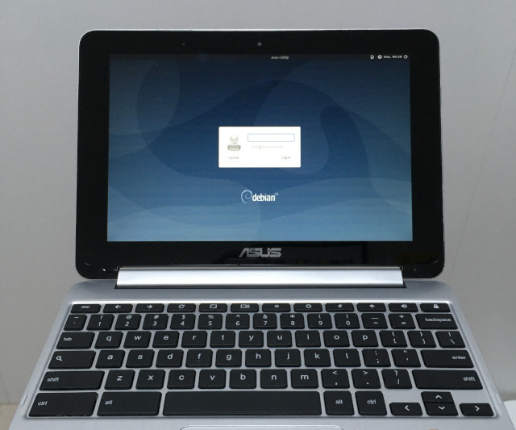

參考資訊：
https://www.zutshigroup.com/doku.php/tech:c100p:developer_mode
https://www.zutshigroup.com/doku.php/tech:c100p:x_console_debian
步驟如下(PC)：
$ cd $ wget https://www.zutshigroup.com/c100p-debian10-nogui-7G.img.xz $ xz -d c100p-debian10-nogui-7G.img.xz $ sudo sudo dd if=c100p-debian10-nogui-7G.img of=/dev/sdX bs=1M
步驟如下(ChromeOS)：
CTRL + ALT + t
crosh> shell chronos@localhost / $ sudo su localhost / # crossystem dev_boot_usb=1 dev_boot_signed_only=0
安裝Debian 10：
1. C100P關機
2. 插入MicroSD
3. 按下電源鍵開機
4. 出現如下畫面後，按下CTRL + u

$ sudo su - # passwd # adduser xxx # ./expand-rootfs.sh # reboot $ sudo su - # ./wifi.sh # Enter SSID: xxx # Enter wifi Password: xxx # apt-get update --allow-releaseinfo-change # apt-get install xfce4 xfce4-goodies network-manager-gnome -y # ./do-config.sh # reboot
完成
